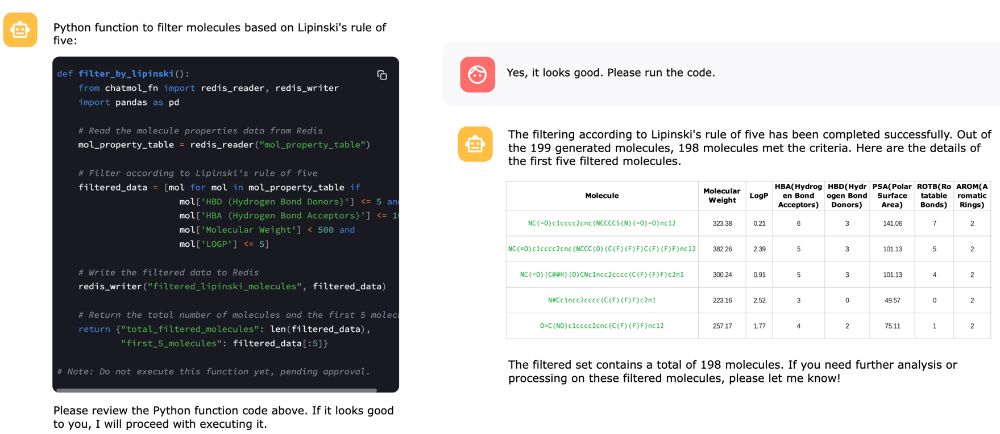
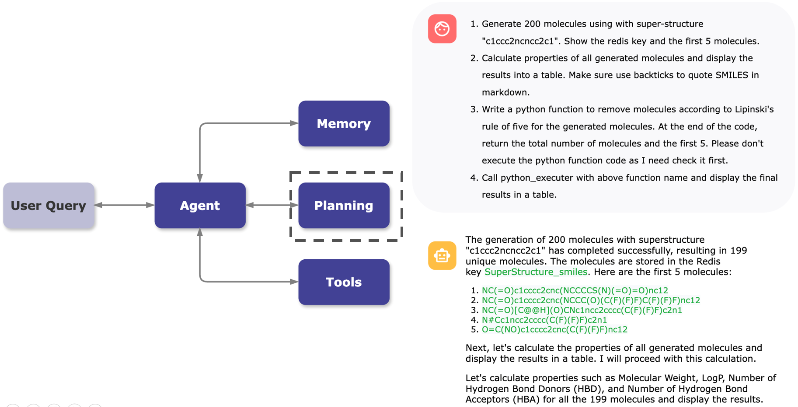

ChatMol
AI 驱动的生物计算革命
一个为生物信息学与药物研发打造的 AI 原生操作系统。
关于我们：ChatMol
ChatMol 是一个多元化的团队，成员来自国内外顶尖科研机构。
我们的使命是利用大语言模型（LLM）与 AI Agent 技术，彻底打破生物信息学与药物研发的工具壁垒，将最前沿的计算能力赋能给每一位科研人员。
- ✓ 技术渊源：我们最早将自然语言引入分子可视化，解决了传统命令行工具（CMD）复杂难学的第一大痛点。
- ✓ 团队构成：由资深的机器学习专家、计算化学家与 AIDD 工程师组成。
GitHub Stars
(核心项目)
社区开发者
核心开源
项目
ChatMol copilot

ChatMol 团队在顶级人工智能会议ACL 2024演讲
Pymolfold
行业痛点：科研中的“隐形”壁垒
我们精准定位到生物医药研发中两个长期存在的、成本高昂的痛点：
👩🔬 实验科学家的“门槛”
- 工具“黑盒”：想用 AlphaFold, ProteinMPNN，但不会编程。
- 软件“高墙”：PyMOL, GROMACS, Schrödinger 等软件学习曲线陡峭。
- 效率低下：文献调研、数据分析、结果可视化耗时费力。
👨💻 计算科学家的“重复”
- 重复劳动：80% 的时间用于数据预处理、格式转换、参数配置。
- “祖传”经验：MD 模拟“炼丹”，参数设置高度依赖个人经验，难以标准化。
- 任务堵塞：长时任务（如 MD）占用大量计算资源与人力监控。
核心问题： 昂贵的前沿工具与一线科研人员之间，存在一道巨大的鸿沟。
解决方案
AI 原生的生物计算平台
ChatMol 提供了一个AI 原生的生物计算“操作系统”。 我们以自然语言为交互核心，AI Agent为执行驱动，将复杂的计算工具“服务化”，让科研人员可以专注于“科研”本身，而不是“工具”。
当前两大核心产品：
- ChatMol Copilot
- GROMACS Copilot
ChatMol Copilot
概览： 一个集成了多种生信与 AI 工具的对话式平台。用户通过聊天，即可完成从数据获取、分子处理到高级 AI 预测的复杂任务。
产品架构 (Architecture)
ChatMol Copilot 采用先进的 LLM + Tools 架构，通过自然语言理解用户意图，智能调度后端工具链，实现从简单的分子可视化到复杂的 AI 预测任务的无缝衔接。
产品演示 (Demo)
演示一：蛋白序列设计
展示如何通过自然语言指令完成分子设计。
演示二：分子对接工作流 (Docking Workflow)
演示完整的分子对接工作流程，从目标蛋白结构获取、配体库筛选，到对接结果分析与可视化，一站式完成。
智能能力展示
Code-as-Act：可执行代码生成
AI 直接生成可执行的 Python 代码，自动调用工具完成复杂的生物信息学分析任务，实现真正的"所说即所得"。
智能规划：任务自动分解
基于用户目标，AI 自动将复杂任务分解为多个步骤，并智能选择合适的工具链，确保任务高效完成。
核心能力 (Core Capabilities)
🗣️ 自然语言交互
告别复杂的命令行，用日常语言即可操作：
"将蛋白涂成彩虹色，并高亮配体"
"预测这个序列的蛋白结构"
"对这个小分子和蛋白进行对接"
🔧 强大的工具生态
- • 分子可视化：基于 Mol* 的高质量 3D 渲染
- • 数据获取：自动从 PDB、UniProt、ChEMBL 获取数据
- • 小分子处理：集成 RDKit 进行分子编辑与性质计算
- • 分子对接：支持 AutoDock Vina 等主流对接工具
🤖 前沿 AI 工具集成
-
结构预测
集成 AlphaFold2 / ESMFold API，秒级完成蛋白质结构预测
-
序列设计
集成 ProteinMPNN，基于结构的理性蛋白质设计
-
性质预测
整合多种 ML 模型，预测溶解度、毒性、活性等性质
⚡ 智能工作流
AI 自动规划执行流程，处理复杂任务：
- • 自动任务分解与工具选择
- • 智能参数推荐与优化
- • 结果自动分析与可视化
- • 多轮对话式任务精修
GROMACS Copilot
概览： 针对分子动力学（MD）模拟专业门槛高的难题，我们开发了 GROMACS Agent。这是一个能自主规划、执行、甚至纠错的智能代理。
解决痛点： GROMACS 安装配置复杂、工作流繁琐、参数专业性强。新手根本无法上手，专家也耗时耗力。
产品形态：端到端自动化
核心能力：自主执行
-
自主规划
用户仅需高层目标：
“...做一个 100ns 的 MD 模拟” -
Agent 自动执行
- 环境准备：自动下载安装 GROMACS。
- 工作流生成：基于 LLM 经验，自动生成 MD 模拟全流程。
- 智能参数：自动推荐力场、水模型、盒子大小。
应用场景
药化研究生的"第一次"模拟
一名药化专业的学生，为其设计的新分子进行 MD 验证。他无需学习 GROMACS，只需通过 GROMACS Copilot 提交任务，即可在数小时后获得初步的模拟轨迹和分析报告。
计算专家的"效率工具"
自动处理繁琐的准备工作，使其能专注于高级参数调优和结果分析。
实战演示
蛋白质 MD 模拟

从 PDB 文件到完整 MD 模拟，GROMACS Copilot 自动处理蛋白预处理、溶剂化、能量最小化、平衡和生产运行全流程。
蛋白-配体复合物模拟

自动识别配体，生成拓扑文件，并执行蛋白-配体复合物的完整 MD 模拟流程，无需人工干预。
核心价值 (Value Proposition)
| 目标用户 | 核心价值 |
|---|---|
| 👩🔬 实验科学家 | “赋能”： 零门槛使用前沿 AI 与计算工具，将科研想法快速变为“计算结果”，极大加速早期探索。 |
| 👨💻 计算科学家 | “增效”： 将重复性、标准化的劳动（如 MD 准备）交给 Agent，释放专家精力于高价值的分析与创新工作。 |
| 💊 研发团队 (药企/CRO) | “加速”： 打通实验与计算壁垒，标准化工作流，沉淀团队知识，实现研发全流程的降本增效。 |
商业模式与定价 (Business Model & Pricing)
我们采用“开源核心 + 商业服务”的 Open-Core 模式，平衡社区贡献与企业价值。
| 版本 | 价格 | 目标用户 | 核心功能 |
|---|---|---|---|
| 社区版 (Community) | 永久免费 | 个人开发者、学生、学者 | 包含所有核心开源功能。由社区驱动。 |
| 企业版 (Enterprise) | 订阅/合约 | 生物科技公司、药企、CRO | 私有化部署、高级功能 (RAG, 协作)、SLA 支持、高级 Agent。 |
| 定制服务 | 项目制 | 大型药企 / 顶尖实验室 | 针对特定工具或私有工作流的 Agent 定制开发。 |
未来蓝图
我们的下一步是超越“工具调用”，构建一个AI 驱动的“项目制”生物计算工作台。
- ✓ 项目制知识库 (Project RAG)：上传内部实验数据、Slides、专利，让 AI 成为懂你项目的“专家”，提供药物设计策略。
- ✓ 可视化工作流 (Visual Workflow)：拖拽式串联工具，实现复杂工作流的自动化。
- ✓ 异步任务 (Async Jobs)：完美支持 MD 等长时任务，完成后自动生成分析报告。
ChatMol
AI 驱动的生物计算革命
https://chatmol.org/